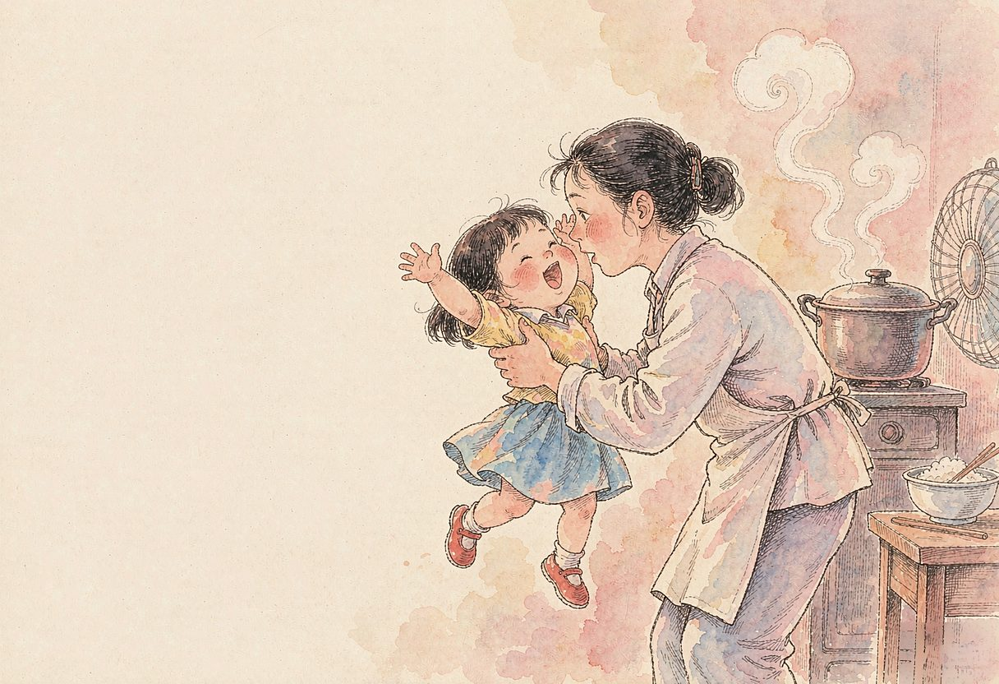

女儿自幼聪颖。18个月大，送进托儿所。
一次， 阿姨们在讲到中午的菜肴时，她突然插嘴：“番茄嘛，烧烧汤吃。”引起哄堂大笑。要知道，不少小伙伴连 “爸爸、妈妈 ”都才刚刚学会叫呢。
后来进了幼儿园。一天，一家三口逛公园回来，已近中午。赶紧动手做饭，由于心急慌忙，我把饭煮成夹生了。妻子开始责怪：你看，你看，这个饭半生半熟的，怎么吃啊？
这时，女儿 “笃、笃、笃 ”地走了过来，说：“妈妈，我有一个好办法，饭不是半生半熟吗，中午，我们先把那一半熟的饭先吃掉，另一半生的饭，到了晚上煮一煮再吃。”
妻子一把抱起女儿，亲一亲：“宝贝，真乖。你的办法真好、真好！”
女儿脸上，也是一脸的得意。不过她弄不明白，为什么那天中午大家还是吃了方便面。